BPMN events là gì?
Event là một loại flow element trong BPMN - nó đại diện cho điều gì đó xảy ra. Bạn dùng event để khiến token dừng lại chờ tại một điểm nào đó, hoặc để cắt ngang tiến trình của token.
Ngoài event, BPMN còn có hai loại flow element khác mà bài BPMN - Overview đã nói qua: task (công việc cần làm) và gateway (điểm rẽ nhánh của flow).
Task là một việc cần phải làm trong process - ví dụ: chọn loại pizza, đặt pizza, ăn pizza.
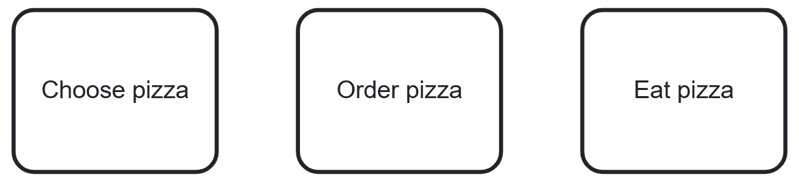
Gateway là điểm rẽ nhánh, dẫn process đi theo một hướng khác trong flow - ví dụ: chọn pizza loại pepperoni hay pineapple.
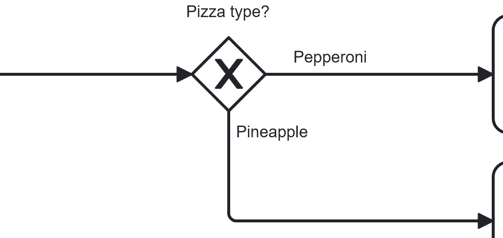
Event là điều gì đó được cho là sẽ xảy ra - ví dụ: nhận thấy đói bụng, chờ tới lượt, món ăn đã sẵn sàng, cơn đói được thỏa mãn.
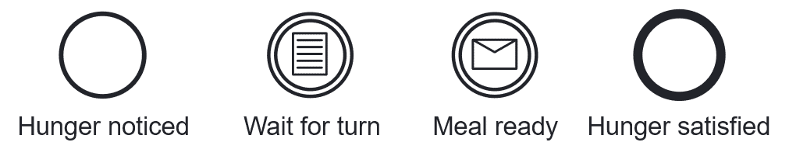
💡 BPMN có rất nhiều loại event. Khóa học này chủ yếu xoay quanh timer event, conditional event, và message event - nhưng bạn có thể tìm hiểu thêm các loại khác tại Camunda Documentation.
Event đặt ở đâu trong process?
Một event có thể là start event, intermediate event, hoặc end event, tùy vào vị trí nó nằm trong process.
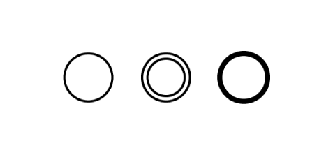
Ba loại ký hiệu
Viền mỏng là start event, viền đôi là intermediate event, viền đậm là end event - chỉ cần nhìn độ đậm của viền là biết ngay event đó nằm ở đâu trong process.
- Start event: là event khiến process bắt đầu chạy - process instance (hay sub-process) được khởi tạo khi event này được activate. Một process chỉ có thể có một none start event. Start event luôn luôn là catching event.
- Intermediate event:
- Cho biết process đã đạt tới một trạng thái nhất định.
- Hữu ích để theo dõi process đang chạy tới đâu - ví dụ để bám các milestone hay KPI.
- Có thể là catching hoặc throwing, tùy loại - riêng none intermediate event thì không có wait state, nên luôn luôn là throwing.
- End event: tiêu thụ (consume) một token. Khi process instance (hay sub-process) không còn token nào đang active, process kết thúc. Một process có thể có nhiều end event. End event luôn luôn là throwing.
💡 Biết chưa? Khi bạn thả một event vào Camunda Modeler, mặc định nó là none event - loại event chưa xác định, còn gọi là event "trắng".
(*) Một event cũng có thể được đặt trên một task - gọi là boundary event, sẽ nói kỹ hơn ở phần sau bài này.
Catching event & throwing event
Catching event là gì?
Catching event là event bị động (passive), có một trigger xác định trước. Nó:
- Xảy ra khi có điều gì đó xảy đến độc lập với process.
- Ảnh hưởng tới đường đi của process, nên bắt buộc phải được model.
Catching event có thể dẫn tới...
🟢 Bắt đầu một process - ví dụ: catch event "nhận thấy đói bụng" kích hoạt process đặt pizza.
➡️ Tiếp tục process hoặc một nhánh của process - ví dụ: timer catch event được trigger khi pizza chưa tới sau 60 phút.
🚫 Hủy một task hoặc sub-process - ví dụ: bạn của bạn mang đồ ăn tới (message catch event), khiến task đặt pizza bị hủy.
🔀 Kích hoạt một nhánh khác trong khi task/sub-process khác vẫn đang chạy - ví dụ: trong lúc chờ pizza, nếu đã 60 phút trôi qua, bạn gọi điện hỏi thăm trong khi vẫn tiếp tục chờ giao hàng (non-interrupting timer event).
Throwing event là gì?
Ngược lại, throwing event là event chủ động (active) - được trigger hoặc gây ra bởi chính process. Nó:
- Có thể đánh dấu một trạng thái đã đạt được.
- Có thể được trigger trong lúc hoặc vào cuối process.
Vậy khi nào dùng loại nào?
- Catching event: process đứng chờ khách gửi đơn hàng - đây chính là catching event khiến process bắt đầu chạy. Start event luôn luôn là catching event.
- Catching hoặc throwing: intermediate event có thể là catching hoặc throwing, tùy loại (none intermediate event thì luôn luôn throwing, vì không có wait state).
- Throwing event: end event được kích hoạt khi process hoàn tất - trong ví dụ này là khi đơn hàng được xử lý xong. End event luôn luôn là throwing event.
Timer events
Timer event là event được trigger bởi một timer đã định nghĩa sẵn. Gồm có timer start event và intermediate timer catch event.
Timer start event
- Một process có thể có một hoặc nhiều timer start event (bên cạnh các loại start event khác).
- Phải có một trong ba định nghĩa: time (thời điểm), date (ngày), hoặc time cycle (chu kỳ lặp).
- Khi bị trigger, một process instance mới được tạo ra và timer start event tương ứng được activate.
Ví dụ: timer start event dùng để trigger process theo chu kỳ hàng tháng. Vào cuối mỗi tháng, lương được trả.
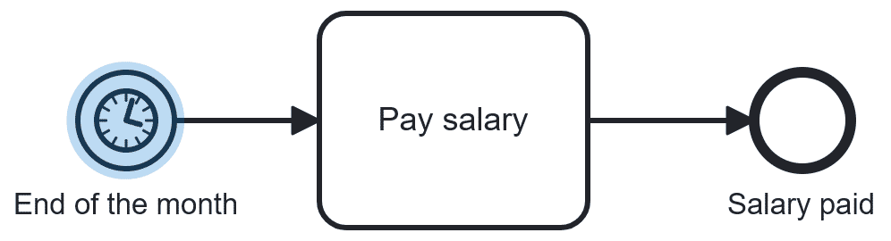
Intermediate timer catch event
Intermediate timer catch event phải có định nghĩa time duration (khoảng thời gian) - xác định khi nào nó được trigger.
Ví dụ: timer phản ứng theo một thời điểm cụ thể. Ở đây, khi có bài tập cần làm, không có gì xảy ra cho tới một tiếng trước hạn nộp - lúc đó bài tập mới được làm.
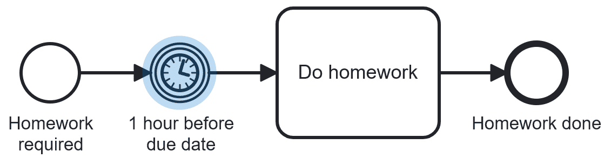
Conditional events
- Được trigger nếu một điều kiện cho trước được đánh giá là true.
- Điều kiện độc lập với process, và gần như bất kỳ thứ gì cũng có thể trở thành điều kiện. Đây cũng là lý do vì sao conditional event (giống timer event) chỉ có thể tồn tại dưới dạng catching event.
Ví dụ: sau khi để rau củ lên vỉ nướng, bạn phải chờ chúng chín mới ăn được. Tùy loại rau, loại lò nướng và nhiều yếu tố khác, việc này có thể mất vài phút hoặc lâu hơn. Bạn không thể dùng timer event vì không biết chính xác cần bao lâu - thay vào đó, bạn chờ điều kiện (rau đã chín) trở thành true.
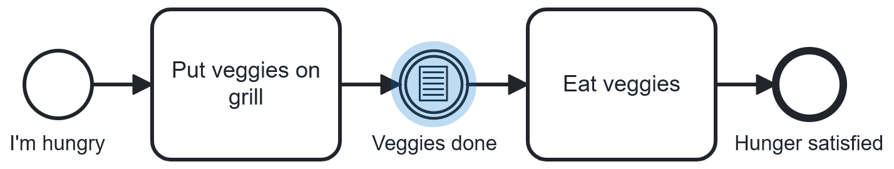
Message events
Message event dùng để gửi hoặc nhận message. Có hai loại:
- Message start event
- Intermediate message throw event và catch event
- Message throw event gửi đi một message.
- Message catch event phụ thuộc vào bên gửi, nên nó phải chờ cho tới khi message được nhận.
Ví dụ: sau khi chọn loại pizza, đơn hàng được gửi tới nhà hàng (throw event). Sau đó process chờ pizza được giao tới từ nhà hàng (catch event).
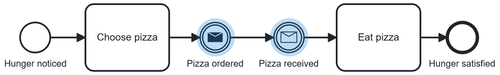
(*) Messaging là một chủ đề khá lớn trong BPMN, nên nó được nói kỹ hơn trong khóa BPMN - Messages and Collaboration.
Boundary events
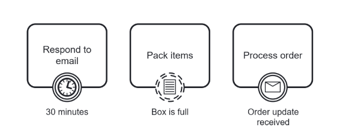
Boundary event là intermediate catch event được gắn lên một task trong process. Bạn có thể vừa chờ nó, vừa làm việc khác trong process cùng lúc.
Boundary event gồm timer, conditional, và message event, và có thể là interrupting hoặc non-interrupting.
Interrupting boundary event
Khi bị trigger, interrupting event sẽ hủy việc thực thi task mà nó đang gắn vào. Cùng xem quy trình dưới đây.
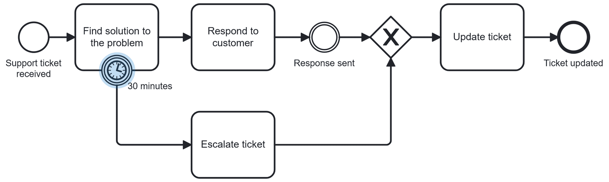
- Process bắt đầu khi một support ticket được nhận.
- Sau đó, cần tìm ra giải pháp cho vấn đề trong vòng dưới 30 phút.
- Khi tìm ra giải pháp, phản hồi được gửi tới khách hàng.
- Sau khi gửi phản hồi, ticket được cập nhật.
- Rồi process kết thúc.
➡️ Interrupting boundary timer event xử lý tình huống không tìm ra giải pháp trong 30 phút. Khi đó, task bị hủy, ticket được escalate, ticket được cập nhật, rồi process kết thúc.
Non-interrupting boundary event
Trong khi interrupting boundary event hủy việc thực thi task, non-interrupting event lại tạo ra một token mới chạy song song với token ban đầu.
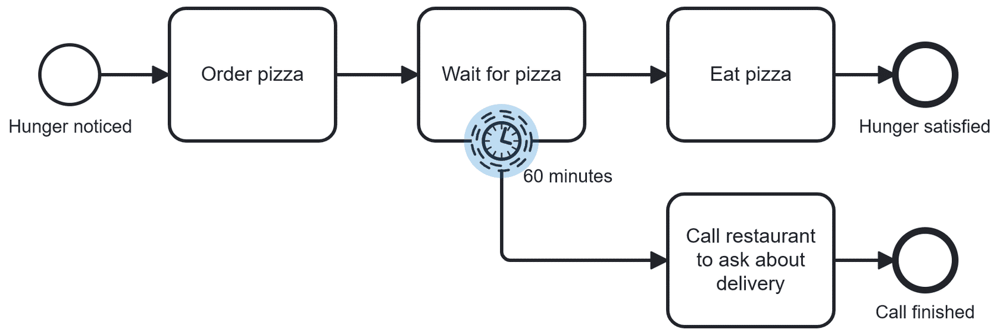
- Process bắt đầu khi cơn đói được nhận ra.
- Sau đó, pizza được đặt.
- Khách chờ pizza. Nếu pizza tới trong vòng dưới 60 phút, khách ăn pizza và cơn đói được thỏa mãn.
➡️ Non-interrupting boundary timer event xử lý tình huống giao hàng trễ. Nếu đã hơn 60 phút, khách gọi điện tới nhà hàng để hỏi thăm. Việc gọi điện không làm gián đoạn việc chờ pizza, và process này có thể có một hoặc hai end event khả dĩ, tùy vào thời điểm pizza được giao.
Event-based gateway
Tương tự exclusive (XOR) gateway dựa trên data, event-based gateway cũng là một cách để thiết kế các nhánh đi khác nhau trong process. Nhưng thay vì dựa vào data, gateway này rẽ nhánh dựa vào event nào xảy ra tiếp theo.
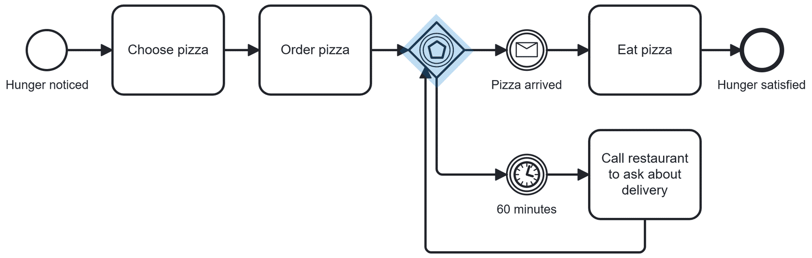
- Nhánh 1: sau khi đặt pizza, bạn chờ pizza được giao tới. Khi pizza tới, bạn ăn pizza, và cơn đói được thỏa mãn.
- Nhánh 2: nếu đã 60 phút mà pizza chưa tới, bạn gọi điện tới nhà hàng, rồi quay lại gateway thay vì đi tới một end event khác sau khi gọi điện xong.
(*) Không phải intermediate event nào cũng kết hợp được với event-based gateway. Tuy nhiên bạn có thể kết hợp nó với receive task. Tìm hiểu thêm về event-based gateway tại Camunda Documentation.
Tóm tắt
- Event dùng để model những điều được cho là sẽ xảy ra trong một process.
- Event có thể là catching (bạn chờ nó xảy ra) hoặc throwing (nó được trigger bởi process).
- Event có thể được gắn lên task - gọi là boundary event, và có thể là interrupting hoặc non-interrupting.
- Event-based gateway là lựa chọn tốt khi bạn muốn phản ứng lại theo event đầu tiên xảy ra trong process.